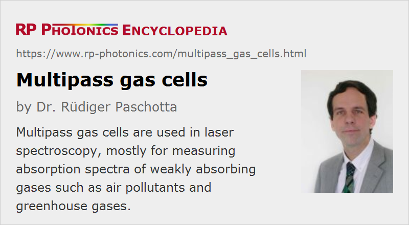

Multipass Gas Cells
Definition: a cell which allows to realize multiple passes of a laser beam through a gas
German: Gaszellen mit Mehrfachdurchgang
How to cite the article; suggest additional literature
Author: Dr. Rüdiger Paschotta
In laser spectroscopy, one often needs to measure the absorption coefficient of light in a gas, or some other effect resulting from the interaction of the gas with light – for example, frequency-dependent phase changes. Typically, small changes to the light beam caused by the passage through the gas are measured as a function of the optical frequency of the laser beam, and the results are presented in the form of a spectrum – for example, an absorption spectrum. The obtained peaks in such a spectrum can be used to identify certain chemical species and to measure their concentration. For such measurements, one often uses wavelength-tunable single-frequency lasers or other narrow-linewidth lasers.
Some typical applications of laser absorption spectroscopy and related spectroscopic data needs are:
- environmental studies, e.g. measuring the concentration of pollutants and greenhouse gases in the atmosphere (where, however, one often uses a long path through the atmosphere and not in a gas cell)
- monitoring of indoor air quality (e.g., detection of carbon dioxide or carbon monoxide in rooms or in mines)
- analyzing the chemical composition of breathed out air for medical diagnosis
In principle, it would often be beneficial to use laser beams in a wavelength region where the relevant chemicals species exhibit strong absorption. That would often be the case in the mid-infrared region. Unfortunately, mid-infrared laser sources are substantially more difficult to make (with good performance) than e.g. near-infrared lasers. Therefore, one often uses simpler near-infrared lasers, accepting the relatively weak absorptions of many gases in that spectral region.
For obtaining a well measurable influence on the laser beam despite weak absorption, one often needs to realize a long path length of the light in the gas. In principle, one could use a correspondingly long single-pass gas cell; in order to avoid excessive beam divergence, one would need to use a laser beam with relatively large beam radius. This approach, however, is often not practical, mostly since the gas cell would become too bulky to be integrated into a compact device. Therefore, one often uses multipass gas cells, where a long path length is realized by multiple passes through a moderately long cell.
A common feature of multipass cells is that the beam path is folded by some kind of highly reflecting mirrors. One often uses concave mirror surfaces, which provide some refocusing of the beam, so that the beam radius can stay relatively small throughout the cell, even when realizing a long beam path. Curvatures of mirrors also often serve the purpose of appropriately modifying the propagation direction of the laser beam. Further, one often tries to obtain a large number of reflections while using only two or three different mirrors, i.e., one utilizes reflections on multiple points on the same mirrors. Different designs of such multipass cells – see below for an overview on the most important ones – differ in various aspects, e.g. concerning
- how many passes can be realized,
- whether it is possible to vary the number of passes,
- how difficult and critical the alignment of the mirrors is,
- how small the gas volume can be made,
- how sophisticated mechanical parts are required, or
- how the beam radius evolves during the passage.
Realizing a small gas volume for a given path lengths can be important for some applications. For example, one may want to achieve a fast turnover of the gas in the cell in order to rapidly monitor changes of the composition of the gas in the environment. At the same time, a high gas flow rate may not be feasible if the gas needs to be filtered.
Examples for Designs of Multipass Gas Cells
Pfund Cells
A particularly simple multipass cell is the Pfund cell, invented by August Pfund in the last 1930s. It consists of two concave mirrors, each one having a hole at the center. An input beam is injected through such a hole at some angle, such that it hits the reflecting part of the other mirror. The curvature radius of each mirror is chosen to be twice the distance between the mirrors, i.e., the focal length equals that distance; after one reflection, the beam is then always parallel to the axis of the gas cell. The second reflection directs the beam towards the hole on the other mirror. The precise direction of the input beam and the beam divergence are not critical.
A modified version has a hole only the first mirror. The output beam then passes back through the hole of the input mirror after five reflections (six passes).
White Cells
A White cell [1] is made of three mirrors – a larger one on one side and two smaller ones on the other side, all having the same radius of curvature. Due to the splitting of the mirrors on one side, one can independently adjust their orientation to the laser beam, which allows one to realize different numbers of passes (but always an integer multiple of 4). The input beam is injected from the side of one mirror, rather than through a hole as for the Pfund cell.
Herriott Cells
For realizing a large number of passes, one often uses the design of the Herriott cell, named after Doland R. Herriott [2, 3]. Such a cell contains only two spherically curved mirrors, or alternatively a flat and a curved mirror. A laser beam propagating along the axis of the cell and thus hitting both mirrors was normal incidence would simply be reflected in itself; one would have a stable resonator. In a Herriott cell, however, the beam is somewhat away from that axis, and the reflection points on each mirror lie on a circle around the mirror center. They advance by an angle θ after each round trip, which depends on the ratio of mirror distance and curvature radius. (That ratio is also important for the evolution of beam radius.) If the angle θ fulfills the condition θ = (m / n) π with integers n and m, the device is “q preserving”, i.e., the complex q parameter of a Gaussian beam (and thus also the beam radius and beam curvature) is preserved [5]. As an example, one may choose θ = 2 π / 16 = π / 8 to obtain 16 double passes (or 32 passes) over the full circle; for given mirrors, that works only for a certain mirror spacing.
In order to realize a finite number of resonator round trips, one can use one or two holes or excavations on the mirrors through which the beam can pass.
Circular Multipass Cells
Circular multipass cells have all the reflection points around a circle, so that beam path forms a kind of star pattern. It is possible to use a separate spherical mirror for each reflection point, so that its curvature radius can be arbitrarily chosen. Alternatively, a single circular mirror can be used, which can essentially be the only part of the whole cell, making it mechanically simple and robust. In the latter case, the radius of curvature is of course half the diameter of the mentioned circle and cannot be freely chosen. Such cells can be used to realize a relatively large number of passes in combination with a rather small cell volume.
Other Applications of Multipass Cells
Similar multipass cells are used for other purposes, where the interaction of the beam with a gas is not relevant. For example, such cells can be used as optical delay lines in mode-locked lasers, where one sometimes wants to realize a long round-trip length and thus a low pulse repetition rate and correspondingly high pulse energy [5].
Suppliers
The RP Photonics Buyer's Guide contains 4 suppliers for multipass gas cells.
Questions and Comments from Users
Here you can submit questions and comments. As far as they get accepted by the author, they will appear above this paragraph together with the author’s answer. The author will decide on acceptance based on certain criteria. Essentially, the issue must be of sufficiently broad interest.
Please do not enter personal data here; we would otherwise delete it soon. (See also our privacy declaration.) If you wish to receive personal feedback or consultancy from the author, please contact him e.g. via e-mail.
By submitting the information, you give your consent to the potential publication of your inputs on our website according to our rules. (If you later retract your consent, we will delete those inputs.) As your inputs are first reviewed by the author, they may be published with some delay.
Bibliography
| [1] | J. White, “Long optical paths of large aperture”, J. Opt. Soc. Am. 32 (5), 285 (1942), doi:10.1364/JOSA.32.000285 |
| [2] | D. R. Herriott, H. Kogelnik and R. Kompfner, “Off-axis paths in spherical mirror interferometers”, Appl. Opt. 3 (4), 523 (1964), doi:10.1364/AO.3.000523 |
| [3] | D. R. Herriott and H. J. Schulte, “Folded optical delay lines”, Appl. Opt. 4 (8), 883 (1965), doi:10.1364/AO.4.000883 |
| [4] | M. L. Thoma, R. Kaschow and F. J. Hindelang, “A multiple-reflection cell suited for absorption measurements in shock tubes”, Shock Waves 4 (1), 51 (1994) |
| [5] | A. Sennaroglu and J. G. Fujimoto, “Design criteria for Herriott-type multi-pass cavities for ultrashort pulse lasers”, Opt. Express 11 (9), 1106 (2003), doi:10.1364/OE.11.001106 |
See also: laser spectroscopy, laser absorption spectroscopy
and other articles in the category photonic devices
|  |
If you like this page, please share the link with your friends and colleagues, e.g. via social media:
These sharing buttons are implemented in a privacy-friendly way!